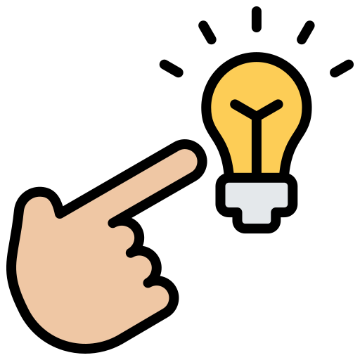

Named after Dwight D. Eisenhower, it reflects his philosophy of managing workload efficiently.
The matrix helps you focus on tasks that truly matter while avoiding distractions or unproductive activities. It encourages proactive planning by emphasizing important tasks before they become urgent.
Having said that, the idea is to grasp the division of ongoing tasks into
four sections:
UI
Urgent and Important such as deadlines, critical issues, immediate consultations...
Do these tasks first.
INU
Important but NOT Urgent resembling long-term projects, skill development, mandatory meetings....
Schedule these for later.
UNI
Urgent but NOT Important regard e-mails, interruptions, temporary adjustments...
Delegate or minimize.
NUNI
Neither Urgent Nor Important such as unnecessary social media scrolling (time-wasters).
Eliminate.
In short, Eisenhower's Matrix is a time-management tool used to prioritize tasks based on their urgency and importance.
But, what if you simply can not decide which tasks
are important or which require immediate attention?
What if I have problems regarding time management?




CLARIFY YOUR GOALS
To distinguish between whatss urgent and important,
start by clearly defining your long-term and short-term goals.
Ask yourself:
What am I trying to achieve?
Which tasks align with my overall goals?
This helps you see what is truly important, not just urgent.

SIMPLIFY
When tasks seem overwhelming or unclear, break them down into smaller, actionable steps. This makes it easier to assess their priority.
What you can do:
Break tasks into chunks: Identify key milestones for each task.
Focus on one step at a time: This reduces overwhelm and allows you to make decisions on what needs attention immediately.

SET CLEAR DEADLINES
If a task doesn’t have an urgent deadline, set one for yourself. Without clear deadlines, it's easy for tasks to linger in the background.
It's recommended to:
Set time limits for each task to prevent overthinking and procrastination.
Create a realistic schedule: Make sure you’re not overloaded with too many tasks at once.

AUTOMATE AND DELEGATE
If you find that certain tasks aren't adding significant value but still consume your time, consider delegating or automating them.
This includes:
Automate repetitive tasks (e.g., using apps or tools for scheduling, social media management, etc.).
Delegate tasks that others are more suited for (e.g., administrative tasks, routine communications).

USE TIME BLOCKS
Rather than multitasking, try blocking out specific periods of your day for different types of work.
For example:
Reserve time for high-priority and important tasks.
Set aside specific time for urgent but low-priority tasks like emails or calls.
REFLECT AND ADJUST
At the end of each day or week, take time to reflect.
What did I accomplish today?
What could I have done more efficiently?


 Introducing The Eisenhower's Matrix
Introducing The Eisenhower's Matrix